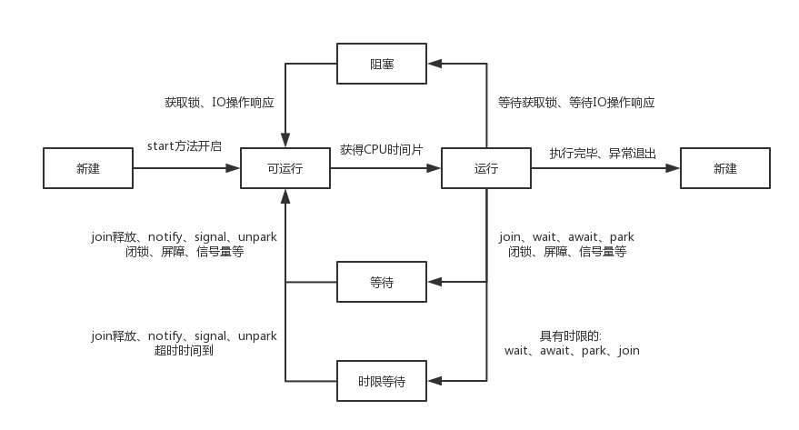

多种创建线程方法优劣比较
线程与进程
进程是操作系统中一些数据集合和一些资源构成的具有独立功能的一次运行活动的单位，比如在windows，麦金塔这些图形化界面出现后，进程也可以理解成是电脑中运行的程序，每个程序是一个进程。进程之间相互独立，拥有自己的空间和信息，而线程是进程中的概念，一个进程中拥有多个线程，每个线程基本共用进程的资源。线程是CPU调度的基本单位。在CPU运行的某一个时刻，运行的是某一个进程中的某一个线程。
并发与并行
并行主要指多个CPU同时进行某个相同的任务，并行的概念更多是说明这种多核操作提升效率，多个线程或者进程间的安全问题的概念在并行里不强调。并发指多个线程在同一个CPU中运行，这种概念比较复杂，涉及到上下文切换导致时间花销、多个线程共享变量安全性等概念。使用者看起来是同时进行，实际上是快速的上下文切换。在并发的情况下，我们一般用QPS来衡量数据的处理效率，判断这个并发是不是优秀。
JAVA 线程状态

使用多线程
JAVA中有约四类方式来创建一个线程并使用：
继承Thread类
基础Thread类，重写其中的run方法。在需要使用的地方创建此类对象，调用start方法运行。
实现Runnable接口
JAVA作为一门单继承语言，继承的代价比较昂贵，可以使用实现runnable接口的方法，实现其中的run方法，在创建Thread对象的时候将实现Runnable接口的类作为参数传入即可。一般的，我们用匿名内部类或者lambda表达来执行这个操作。调用start方法开启任务。
实现Callable接口
Callable接口底层仍旧是调用Runable接口,不过有一些回调函数的设计，回调函数可以让两个线程有方法进行通信，通过这种方式Callable接口进行多线程创建后可以有返回值。
具体的使用方法是创建一个Callable接口，作为创建FutureTask的构造器参数传入其中，再将FutureTask作为参数传入Thread的创建中。
线程池创建线程
线程池是一个比较重要的概念，在多线程环境下，为了节约资源，让线程能够重复利用我们创建线程池，线程池保证持有一定量的线程。此种方法创建线程的步骤是先创建一个线程池，再向其中具体添加内容。
四种创建线程方法实现
1 | public static void main(String[] args) { |
中断
线程中断也是一个很重要的概念。中断并不会直接停止某个线程，而是根据此线程当前的状态做出操作。
中断工作原理
每个运行的线程都会不断的去读取自己线程的中断标识，如果是中断状态则抛出中断异常，如果我们获取这个异常，可以在线程中进行相应的操作（典型的，sleep方法要求catch中断异常），如果我们不获取这个异常，那么线程抛出异常，直接结束。
中断对什么线程起作用？
中断对正在运行的线程，对处于wait、await、join的线程起作用，对等待其他线程释放锁而本身阻塞的线程不起作用。综合来说，对于上图线程状态，中断对等待起作用，对阻塞不起作用。因为等待的线程会有CPU不断检测状态，当CPU检测到中断时会将其中断，而阻塞的线程被挂起，不再占用CPU，所以一直到阻塞结束前，都无法响应中断。
并不是任何情况下都符合这条规则，如果我们使用ReentrantLock，它提供了一种方法，可以让我们上锁的时候，即使处于阻塞的状态也可以响应中断。